GLICD
Configurer les sources de Apt (advanced package tool) en mode graphique en utilisant Synaptic : Debian
Configurer le fichier sources.list, qui se trouve dans : /etc/apt/sources.list
SYNAPTIC :
Packages.debian
Synaptic est une interface graphique du gestionnaire de paquets.
Les applications sont organisées sous forme de paquets.
Le gestionnaire de paquets permet d'installer, de mettre à jour ou de supprimer ces applications.
ATTENTION :
- Synaptic gère tous les programmes installés sur le système (PC).
- Synaptic est à utiliser avec le plus grand soin.
- Synaptic peut rendre le système inutilisable.
AVANT de poursuivre, consulter SourcesList du
wiki.debian
- Ouvrir Synaptic : Simple clic > Applications > Système > Gestionnaire de paquets Synaptic

- Une fenêtre apparaît, Authentification requise avec le mot de passe pour Root (superutilisateur)

- Saisir le mot de passe pour Root (superutilisateur) et valider avec la touche « Entrée » du clavier
Ou simple clic > S'authentifier

- A la première ouverture du Gestionnaire de paquets Synaptic, la fenêtre de présentation rapide apparaît.
Lire et simple clic > Fermer (il se peut que cette fenêtre n'apparaisse pas.)

- L'application de Synaptic apparaît, composée de 6 zones :
- Barre de menus : Fichier, Edition, Paquets, Configuration, Aide.
- Barre d'outils : Permet les actions principales. Recharger, Tout mettre à niveau, etc...
- Sélecteur de catégorie : Affine la liste des paquets
- Liste des paquets : Répertorie les paquets connus. Peut être optimisé à l'aide de filtres.
- Champ de description : Affiche la description du paquet sélectionné.
- Barre d'état : Affiche des informations globales sur l'état de Synaptic.

- Simple clic > Configuration, un menu déroulant apparaît
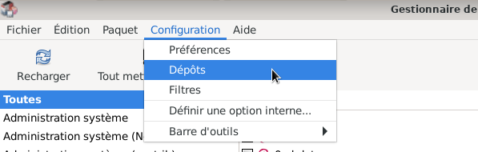
- Simple clic > Dépôts
- Une fenêtre des Dépôts apparaît ; l'agrandir avec le petit carré en haut à droite de cette fenêtre.
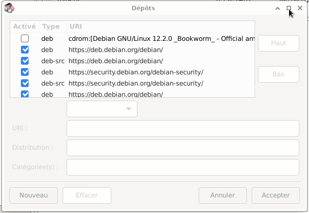
- Si l'installation de Debian a été faite via un support externe (exemple : clé usb) associé à une connexion internet :
Le fichier sources.list doit ressembler à celui ci-dessous.
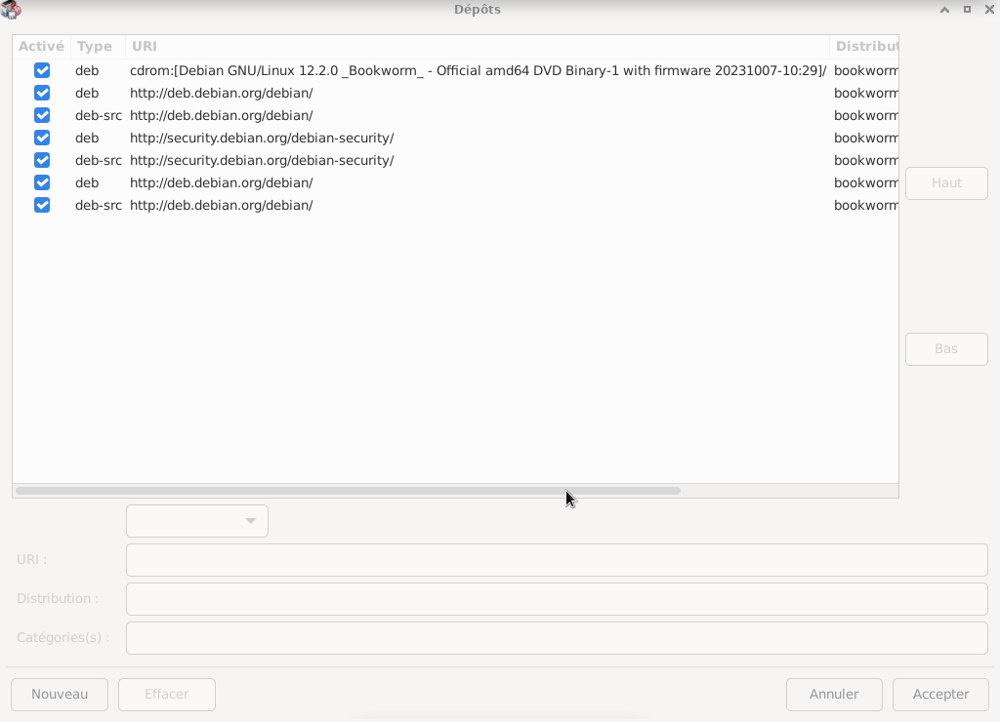

- Si les prochaines mises à jour s'effectuent par internet, il n'y a plus besoin de pointer sur le cdrom.
Décocher la case cdrom
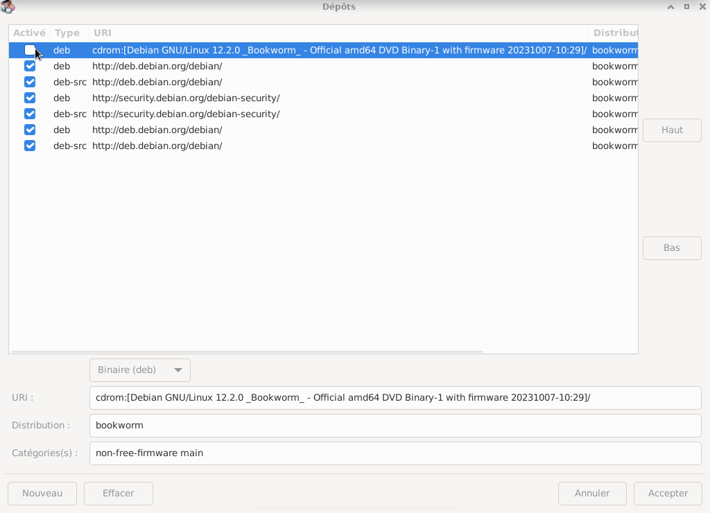
- AVANT de poursuivre, consulter SourcesList du
wiki.debian
Changement de http > https pour utiliser les dépots sur des connexions HTTPS chiffrées.
Et, si souhaité, ajouter les composants "contrib non-free"
Si souhaité, modifier :
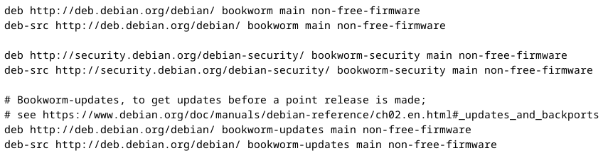
par :

- Simple clic sur la ligne > deb http://deb.debian.org/debian/ bookworm main
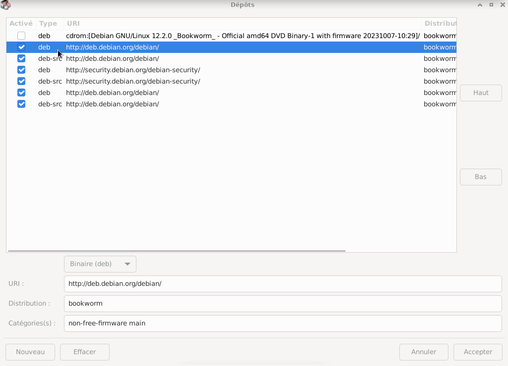
- En bas de la fenêtre saisir dans :
URI : https://deb.debian.org/debian/
Catégories : main contrib non-free non-free-firmware (si souhaité)
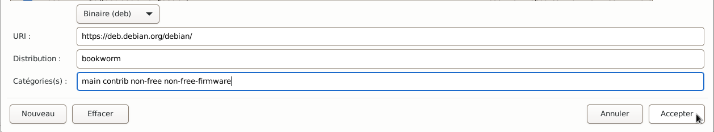
Faire la même manipulation pour les 5 autres types d'archives (si souhaité).
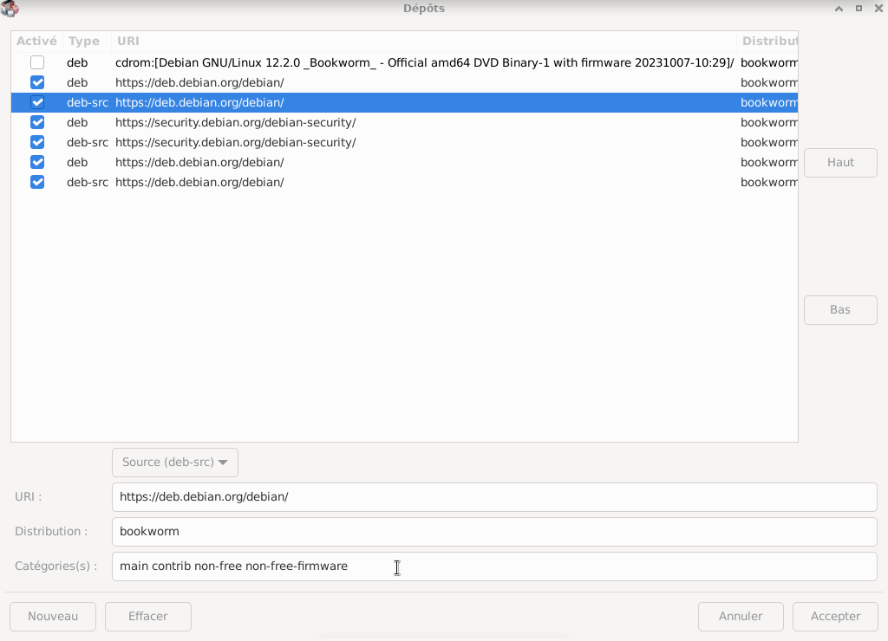
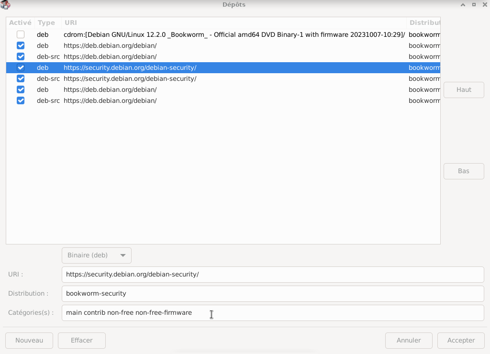
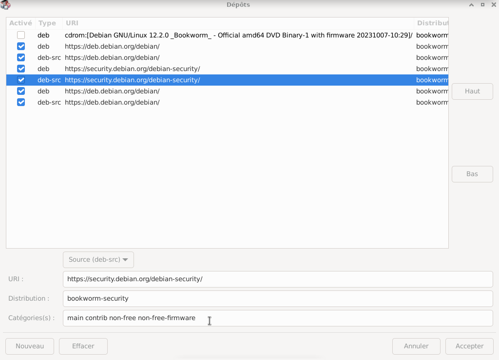
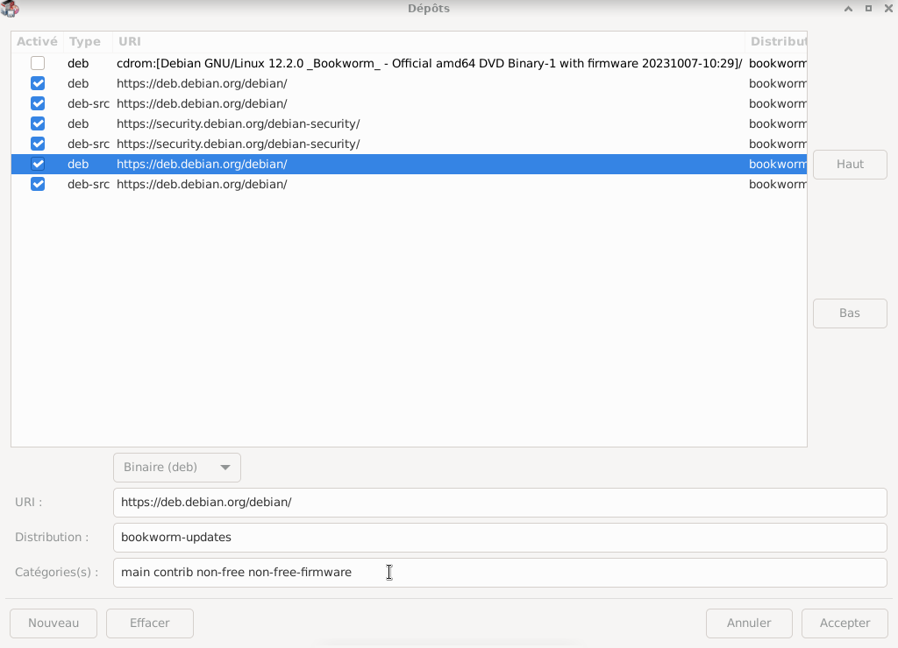
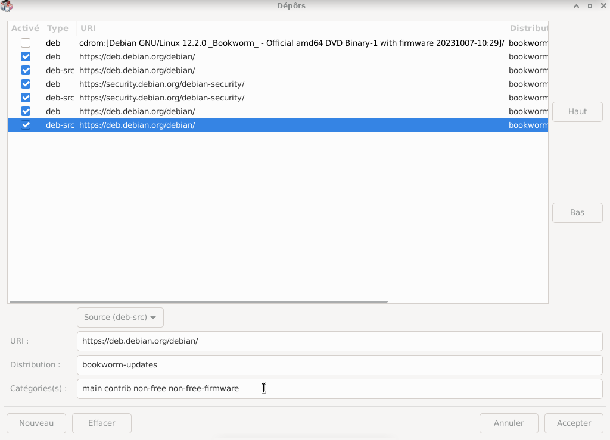
- Les modifications terminées, simple clic en bas à droite > Accepter
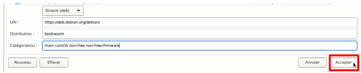
- Une fenêtre apparaît "Dépôts modifiés", simple clic > Recharger
Et laisser faire
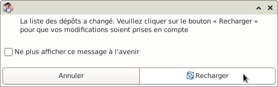
- A ce stade vérifier bien les modifications dans : Configuration > Dépôts
Si, les modifications se sont bien passées, quitter Synaptic.
Sinon, recommencer
Pour consulter la documentation de Synaptic
simple clic > Aide.
Simple clic > A propos puis Synaptic-wiki
Ou Visiter la page d'accueil de Synaptic.
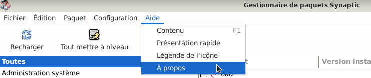
- Quitter le Gestionnaire de paquets Synaptic: Fichier > Quitter


Retour
Informations sur le logiciel libre et
Merci.
Marques déposées :
Ce site ne fait pas partie de Debian, n'est pas produit par le projet
Debian, ni approuvé par le projet Debian.
Ce site n'est pas affilié à Debian. Debian est une marque déposée appartenant
à Software in the Public Interest, Inc.
Contribuer :
Ce site ne fait pas partie de XFCE, n'est pas produit par le projet
XFCE, ni approuvé par le projet XFCE.
Ce site n'est pas affilié à XFCE.
Ce site est juste réalisé par un passionné.